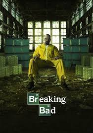
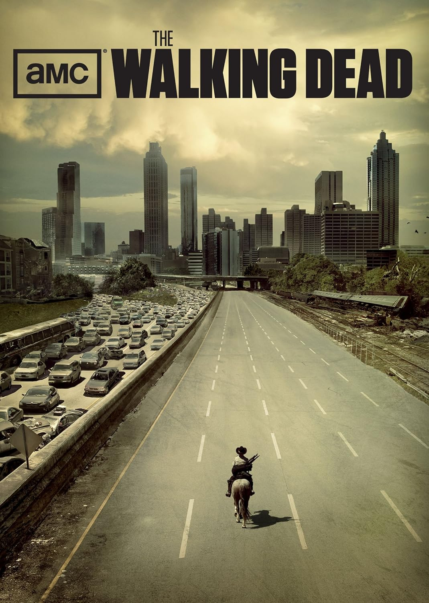
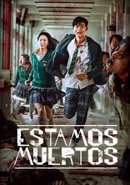
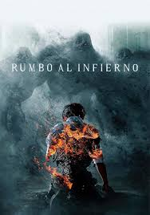

Series Favoritas
- Breaking Bad
- The Walking Dead
- Estamos muertos
- Rumbo al infierno
Breaking Bad
Sipnosis: Un profesor de química de secundaria, Walter White, recibe un diagnóstico devastador y decide usar sus conocimientos para fabricar metanfetamina junto a un exalumno problemático. Lo que empieza como un intento desesperado por asegurar el futuro de su familia se convierte en una peligrosa vida criminal que lo transformará por completo.
- Director: Vince Gilligan (creador; varios directores)
- Año: 2008/2013
- Género: Terror /Suspenso
- Duración: 5 temporadas (62 episodios, aprox. 47 min c/u)
Trailer:
The Walking Dead
Sipnosis: Tras despertar en un mundo devastado por zombis, el ex sheriff Rick Grimes busca a su familia y lucha por sobrevivir junto a un grupo de sobrevivientes. Mientras enfrentan hordas de muertos vivientes y comunidades humanas peligrosas, descubren que el verdadero reto no siempre son los zombis, sino lo que la gente es capaz de hacer para mantenerse con vida.
- Director: Frank Darabont (creador; varios directores)
- Año: 2010/2022
- Género: Terror / Drama / Post-apocalíptico
- Duración: 11 temporadas (177 episodios, aprox. 44 min c/u)
Trailer:
Estamos muertos
Sipnosis: Un virus que convierte a los estudiantes en zombis se desata dentro de una escuela secundaria. Atrapados sin ayuda del exterior, un grupo de jóvenes debe unirse para sobrevivir mientras el contagio se expande por toda la ciudad. Con terror, caos y decisiones difíciles, cada minuto puede ser el último.
- Director: Lee Jae-kyoo, Kim Nam-su
- Año: 2022
- Género: Terror / Zombis / Drama escolar
- Duración: 1 temporada (12 episodios, aprox. 55/70 min)
Trailer:
Rumbo al infierno
Sipnosis: Criaturas sobrenaturales aparecen para anunciar la muerte de ciertas personas, llevándolas al infierno en violentas demostraciones públicas. Mientras el pánico crece, una organización religiosa gana poder al afirmar que estos castigos son voluntad divina. En medio del caos, algunos intentan descubrir la verdad detrás de las profecías… antes de que sea demasiado tarde.
- Director: Yeon Sang-ho
- Año: 2021
- Género: Fantasía oscura / Terror / Suspenso
- Duración: 1 temporada (6 episodios, aprox. 50/60 min)